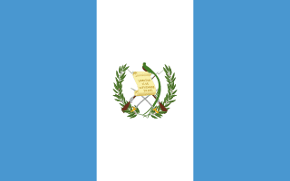

Haroldo Moises Gonzalez Benavente
About Me
My name is Haroldo Gonzalez. I was born in Guatemala and live with my family in Guatemala City. I'm currently studying to get a Bachelor's degree on Software Development. I love movies and playing videogames
Guatemala City, Guatemala

Guatemala is the most populous country in Central America, known as the "Heart of the Mayan World" Located in Mesoamerica, it is famous for its volcanoes, and deep-rooted cultural heritage.